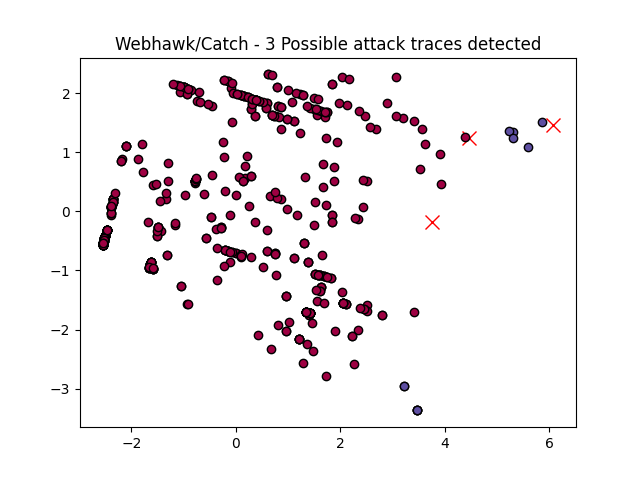

Webhawk Catch ReportUnsupervised learning Web logs/OS processes attack detection. Date: 18/06/25 at 20:34:50 GMTLog file: /Users/walid/Downloads/access.log.2025-02-08 Log type: apache logs Findings: 3 |
 |
| Severity | Related CVE(s) | Line# | LLM Insights(llama3.2) | Log line |
| High | No CVE found | 251 | The request for a PHP readme file from a specific IP address suggests potential malicious activity, as the file is typically used to display version information or licensing terms, and its retrieval may be unauthorized or part of a phishing attempt. | 128.199.89.103 - - [08/Feb/2025:07:20:19 -0800] "GET /assets/admin/bower_components/jquery.filer/php/readme.txt HTTP/1.1" 301 533 "-" "Mozilla/5.0 (Windows NT 10.0# Win64# x64) AppleWebKit/537.36 (KHTML# like Gecko) Chrome/99.0.4859.172 Safari/537.36" |
| High | CVE-2012-3588 CVE-2007-5389 CVE-2007-5318 CVE-2007-2861 CVE-2007-1141 CVE-2006-4889 CVE-2006-2032 CVE-2006-2029 CVE-2006-0723 |
425 | The request appears suspicious due to the high error code (404) and a long URL, which may indicate a brute-force or automated attack on a web application. The user agent string also seems outdated, suggesting potential phishing or malware activity. | 160.191.214.146 - - [08/Feb/2025:19:55:03 -0800] "POST /public/static/admin/lib/webuploader/0.1.5/server/preview.php HTTP/1.1" 404 250 "-" "Mozilla/5.0 AppleWebKit/601.1.46 (KHTML# like Gecko) Version/9.0" |
| High | CVE-2012-3588 CVE-2007-5389 CVE-2007-5318 CVE-2007-2861 CVE-2007-1141 CVE-2006-4889 CVE-2006-2032 CVE-2006-2029 CVE-2006-0723 |
427 | The user agent "AppleWebKit" combined with the version number, indicating a Safari browser. The request is for a preview of a file and returns a 404 error, suggesting that the requested file does not exist on the server, which may be an indication of malicious activity such as attempting to view or exploit vulnerable files. | 160.191.214.146 - - [08/Feb/2025:19:55:03 -0800] "POST /static/lib/webuploader/0.1.5/server/preview.php HTTP/1.1" 404 250 "-" "Mozilla/5.0 AppleWebKit/601.1.46 (KHTML# like Gecko) Version/9.0" |